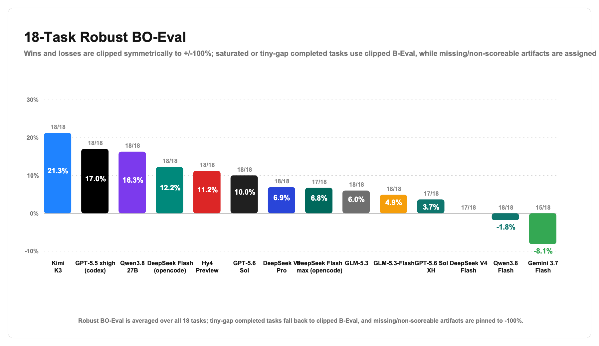
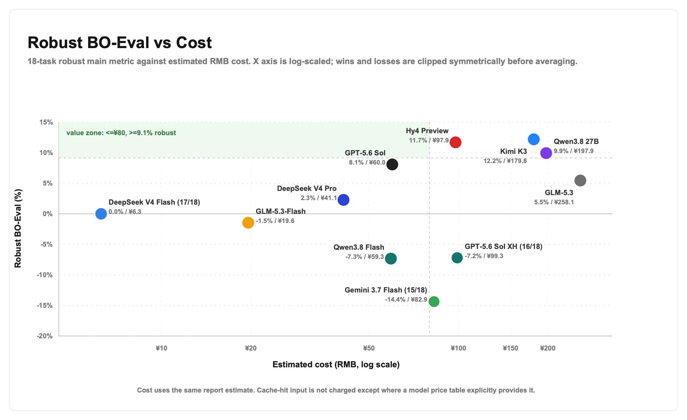
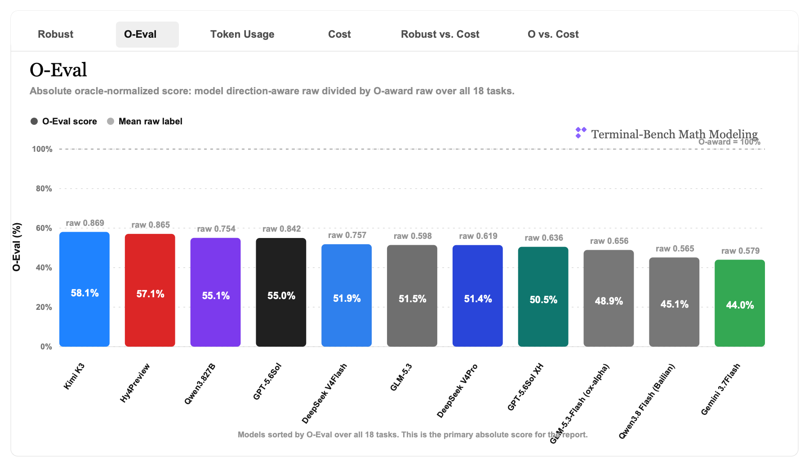
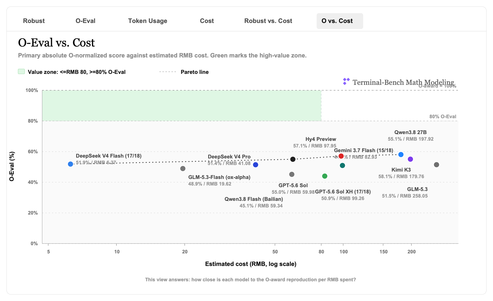
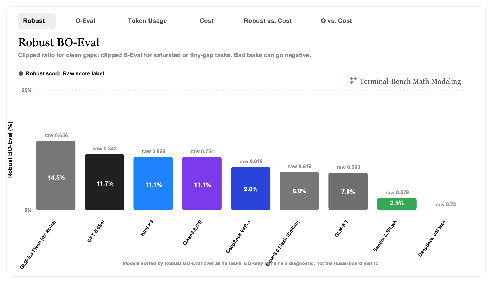
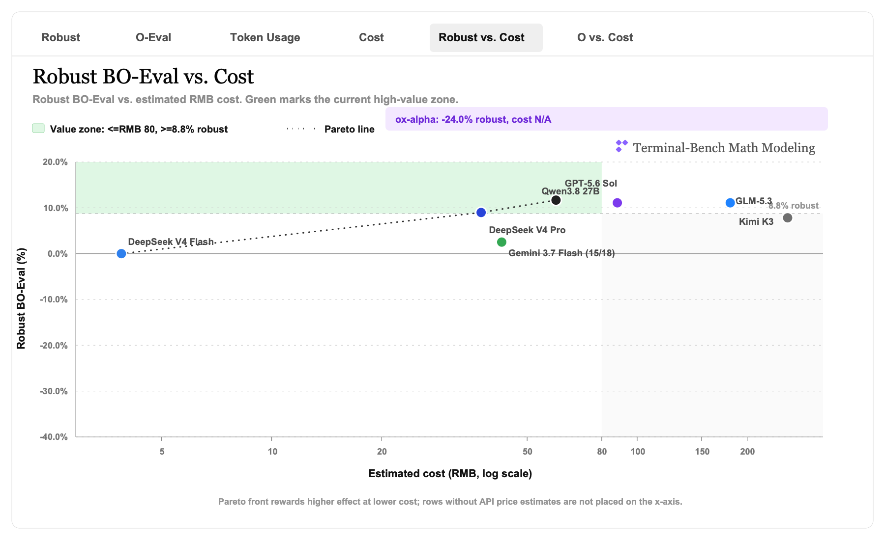
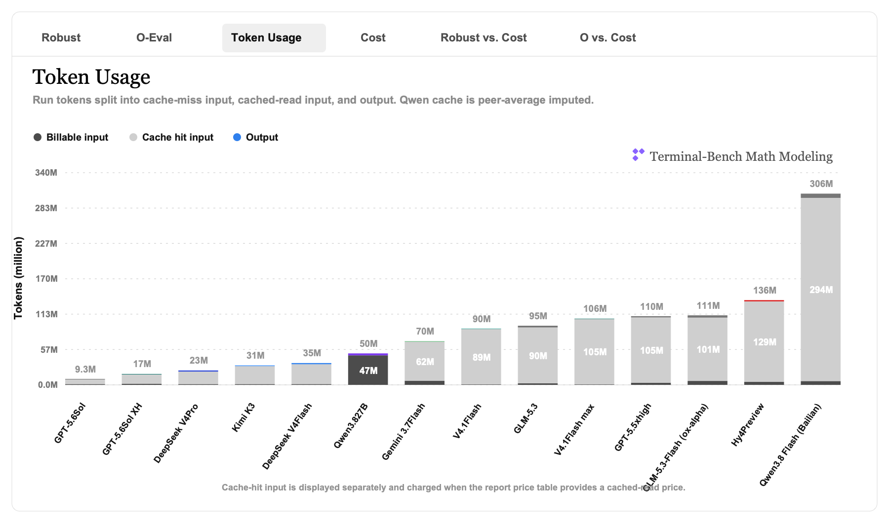
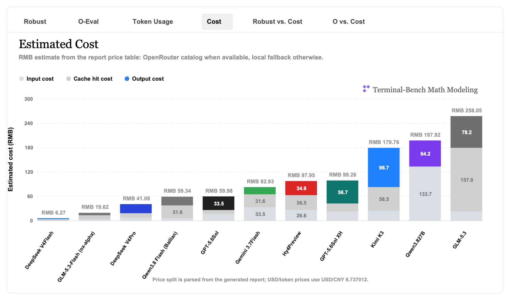
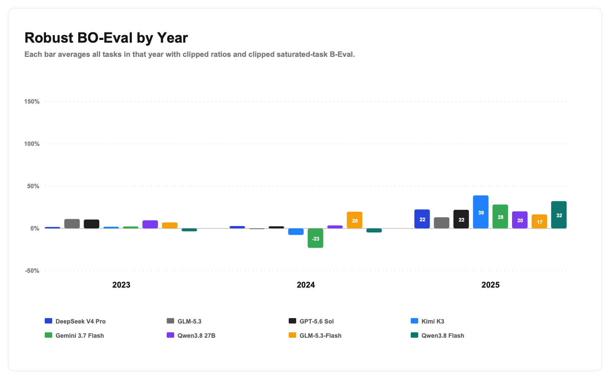
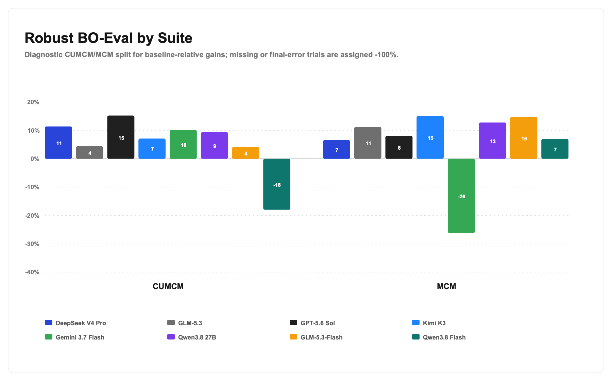

相对 O 奖方案的完成度
把 agent 的可行解同高质量 oracle solution 对齐。大白话说，80% 就是接近 O 奖参照解的 80% 效果，但不是说报告写作水平等于人类 O 奖。
18 道 2023-2025 年 CUMCM 与 MCM 题目，每道题都要求 agent 在终端环境中产出结构化结果，并接受自动化 verifier 复核。
/root/results/*_result.json，让评测可复核。
默认按 Robust BO-Eval 排序，同时展示 O-Eval、BO-only 与成本。点击列名可排序。
| Model | Artifacts | O-Eval | Robust BO-Eval | BO-only | Cost RMB | Status |
|---|---|---|---|---|---|---|
| 1GPT-5.6 SOL highStrong oracle-normalized result, stable robust score. | 18 / 18 | 84.16% | 11.68% | 99.37% | ¥59.98 | complete |
| 2Kimi K3Highest O-Eval, higher total cost. | 18 / 18 | 86.88% | 11.09% | 89.20% | ¥179.76 | complete |
| 3Qwen3.8-27B-FP8 thinkingSmall model size, surprisingly competitive robust score. | 18 / 18 | 75.45% | 11.09% | 142.41% | ¥88.26 | complete |
| 4v4 proModerate cost, competitive BO-only value. | 18 / 18 | 61.87% | 8.98% | 121.72% | ¥37.42 | complete |
| 5GLM-5.3More expensive in this run due to token and pricing mix. | 18 / 18 | 59.82% | 7.82% | 127.83% | ¥258.05 | complete |
| 6Gemini 3.7 Flash highPartial artifact coverage, primary plus retry. | 15 / 18 | 57.86% | 2.52% | 26.15% | ¥42.60 | partial |
| 7v4 flash baselineLow cost baseline, O-Eval is strong but BO margin is zeroed. | 18 / 18 | 71.98% | 0.00% | 0.00% | ¥3.88 | complete |
| 8OpenRouter ox-alphaStealth endpoint failed, retained for transparency. | 0 / 18 | 0.00% | -24.03% | 0.00% | N/A | failed |
成本按报告中的人民币估算值展示。OpenRouter ox-alpha 没有有效 artifacts，因此不纳入成本比较。
数学建模没有唯一标准答案，所以 TB-MathModel 同时看 oracle-normalized 效果、相对 baseline 的提升，以及对离群点更稳健的 Robust BO-Eval。
把 agent 的可行解同高质量 oracle solution 对齐。大白话说，80% 就是接近 O 奖参照解的 80% 效果，但不是说报告写作水平等于人类 O 奖。
把 baseline 到 oracle 之间的差距当作进步空间，衡量模型是否真的做出了比基础方案更强的优化。
在 BO-Eval 上加入稳健处理，避免极小分母或个别坏题把平均值拉飞。它更适合论文主表，O-Eval 作为直观补充。
以下图表来自 2023-2025 全部 18 题汇总，包含效果、成本、token、年度拆分和赛制拆分。










每道题都覆盖一个真实应用场景，要求模型完成假设、建模、求解、代码和可验证结果输出。
原始分析文档也随站点发布，方便复核指标、图表和知乎文章草稿。